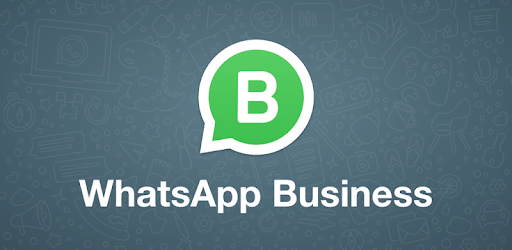

Aplicaţia care va îngropa WhatsApp. Cum funcţionează ... Aplicația WhatsApp are din nou probleme tehnice iar unii utilizatori trebuie să șteargă și să reinstaleze aplicația pentru că li se blochează telefoanele. Mesajele care au circulat pe WhatsApp conțin multe numere și caractere necunoscute. Aceste mesaje duc la blocarea activității ...
REALITATEA.NET | Site-ul de stiri Nr. 1 International Girl Directory. Con WhatsEscort ottieni contatti di Escort locali, disponibili per serate all'insegna della classe e del lusso nella massima riservatezza.
Cum să apari offline pe Whatsapp, dacă ești conectat ... WhatsApp va trimite apoi un cod de verificare pentru a verifica numărul, pe care îl va citi automat dacă ați acordat permisiuni. În caz contrar, introduceți doar numărul de verificare și sunteți bine să mergeți. În cazul în care nu primiți SMS-ul, puteți de asemenea să apăsați pe butonul Call de pe ecran pentru a obține un ...
Probleme tehnice la WhatsApp. "Dacă găsiți vreun mesaj ... WhatsApp Messenger: Mai mult de 2 miliarde de oameni din peste 180 de țări folosesc WhatsApp pentru a ține legătura cu prietenii și familia, oricând și oriunde s-ar afla. WhatsApp este gratuit și oferă servicii de mesagerie și apelare simple, securizate și de încredere, disponibile pe telefoane din întreaga lume.
WhatsApp - Official Site WhatsApp are o problema foarte grava pentru telefoanele mobile dezvaluita in momentul de fata pentru milioane peste milioane de utilizatori din intreaga lume, si e ceva de care toata lumea ar trebui sa stie. Mai exact, aplicatia WhatsApp este vulnerabila la atacuri cu mesaje text, adica unii utilizatori folosesc anumite tipuri de mesaje text pentru a bloca aplicatia din telefoanele ...
Descărcați WhatsApp WhatsApp este cea mai importantă platformă de mesagerie criptată din lume, dar se confruntă cu o concurență aflată într-o mișcare rapidă. Signal este ”cea mai bună și mai strălucitoare alternativă la WhatsApp”, consideră Forbes, potrivit căruia această aplicație ”este de ...
Spioneaza telefonul - Urmareste mobilul Simplu. Sigur. Securizat. — WhatsApp de la Facebook WhatsApp Messenger este o aplicație de mesagerie GRATUITĂ, disponibilă pentru iPhone și alte smartphone-uri. WhatsApp folosește conexiunea la internet a telefonului (4G/3G/2G/EDGE sau Wi-Fi, în funcție de disponibilitate) pentru a vă permite să co…
Întrebări frecvente WhatsApp Spioneaza telefonul - Urmareste mobilul. Spy Phone App - Mobile Tracker este un instrument complet de supraveghere a smartphone-urilor. Acesta poate fi folosit pentru controlul copiilor minori, pentru a monitoriza activitatea angajatilor sau chiar pentru a recupera datele pierdute sau pentru a urmari un smartphone pierdut/furat.
2020.09.20 11:38

Întrebări frecvente ro Selectați-vă limba azərbaycan Afrikaans Bahasa Indonesia Melayu català čeština dansk Deutsch eesti English español français Gaeilge hrvatski italiano Kiswahili latviešu lietuvių magyar Nederlands norsk bokmål o‘zbek Filipino polski Português (Brasil) Português (Portugal) română shqip slovenčina slovenščina suomi svenska Tiếng Việt Türkçe Ελληνικά български қазақ тілі македонски русский српски українська עברית العربية فارسی اردو বাংলা हिन्दी ગુજરાતી ಕನ್ನಡ मराठी ਪੰਜਾਬੀ தமிழ் తెలుగు മലയാളം ไทย 简体中文 繁體中文 日本語 한국어 WhatsApp Web Funcții Descărcați Securitate Întrebări frecvente Descărcați Funcții Securitate Întrebări frecvente Luați legătura azərbaycan Afrikaans Bahasa Indonesia Melayu català čeština dansk Deutsch eesti English español français Gaeilge hrvatski italiano Kiswahili latviešu lietuvių magyar Nederlands norsk bokmål o‘zbek Filipino polski Português (Brasil) Português (Portugal) română shqip slovenčina slovenščina suomi svenska Tiếng Việt Türkçe Ελληνικά български қазақ тілі македонски русский српски українська עברית العربية فارسی اردو বাংলা हिन्दी ગુજરાતી ಕನ್ನಡ मराठी ਪੰਜਾਬੀ தமிழ் తెలుగు മലയാളം ไทย 简体中文 繁體中文 日本語 한국어
Cum vă putem fi de ajutor?
În plus, puteți consulta subiectele de mai jos pentru a încerca să găsiți ce căutați. Web și Desktop Descărcare și instalare
Despre WhatsApp Web și Desktop
Aveți două opțiuni prin care puteți folosi WhatsApp pe computer:
WhatsApp Web : o aplicație WhatsApp ce rulează în browser; WhatsApp Desktop : o aplicație pe care o puteți descărca pe computer.
WhatsApp Web și Desktop sunt extensii ale contului dumneavoastră WhatsApp de pe telefon ce rulează pe computer. Mesajele pe care le trimiteți și le primiți se sincronizează între telefon și computer, iar dumneavoastră le puteți vedea pe ambele dispozitive.
Resurse corelate:
Cum puteți descărca WhatsApp Desktop Cum vă puteți conecta sau deconecta Probleme cu conexiunea la WhatsApp Web sau Desktop V‑a fost util acest articol? Da Nu De ce nu v‑a fost util articolul? A fost neclar Nu mi-a răspuns la întrebare Soluția nu funcționează Nu-mi place funcția sau politica Vă mulțumim pentru feedback Înapoi la Întrebări frecvente
WhatsApp
Funcții Securitate Descărcați WhatsApp Web Business Confidențialitate
Companie
Info Cariere Marca companiei Luați legătura Blog Povești WhatsApp